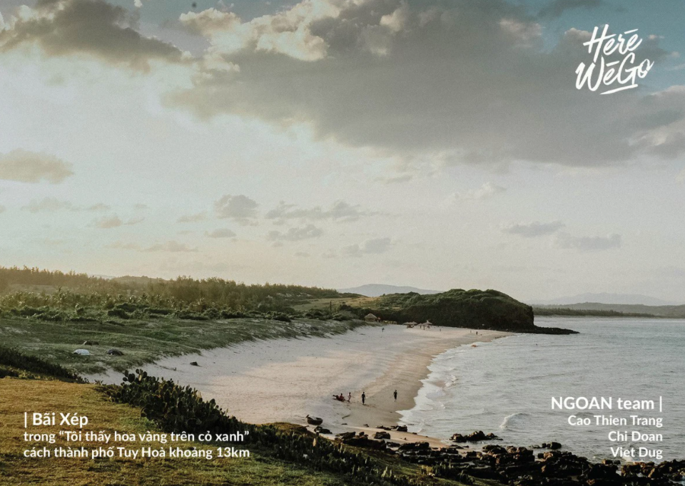
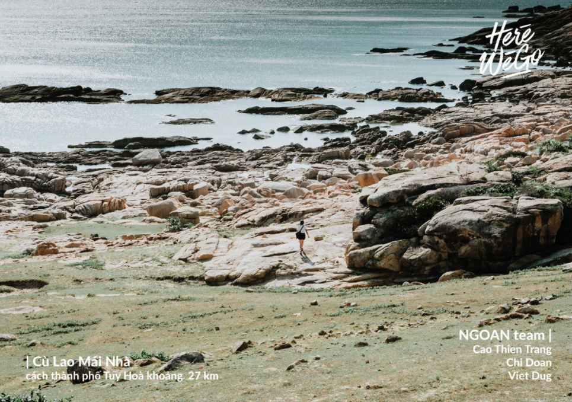

Chiều Phú Yên tháng tám, nắng đã dịu hẳn và biển vẫn không thôi rì rào. Lũ thanh niên thành phố chúng tôi ngồi chờ mặt trời lặn ở Bãi Xếp, im lặng hướng mắt theo lũ trẻ con và trái bóng tròn.
Đã lâu rồi chúng tôi mới được tận hưởng một buổi chiều yên bình đến thế, yên bình đến nhanh trên từng-đơn-vị-giác-quan. Bầu trời trong veo được thu gọn trong tầm mắt, tiếng sóng biển êm tai, mùi cỏ non đong đầy và thứ cảm xúc yên an khẽ chạm vào ngón tay, khuôn mặt và lan nhanh ra cả tâm trí. Vẫn dính chặt ánh mắt vào vùng biển phía xa, Thoa buông lời hỏi vu vơ nhưng tôi lại nghe như có chút giận hờn, có chút khát khao và cả chút bất lực trong đó. Thoa hỏi:
Thoa là cô gái gốc Phú Yên, người bạn đồng hành của chúng tôi suốt một ngày dài với vai trò hướng dẫn viên. Thoa nói rằng, từ núi, đến rừng, ra đến biển lớn rồi con người thân thương, trượng nghĩa Phú Yên đều có cả, thế mà Phú Yên của Thoa đến bây giờ vẫn chỉ là một vùng đất không mấy người gọi tên, không mấy người biết đến. Tôi không dám nhìn Thoa, tự cảm thấy câu hỏi của em dù ít dù nhiều vẫn là dành cho những người trẻ như chúng tôi - những người mải miết đổ ra thế giới mà vô tình quên đi rằng đất nước và quê hương mình cũng còn nhiều vùng đất cần được khám phá và đưa thật xa cho nhiều người biết đến. Và chúng tôi cũng tự hỏi bản thân mình, nếu không vì cơ duyên lần này với Herewego, chúng tôi liệu có chọn Phú Yên làm điểm đến?
Sự thật là chúng tôi không biết quá nhiều về Phú Yên cũng như không đặt quá nhiều kì vọng vào chuyến đi lần này. Thế nhưng, bằng một “kĩ năng bí mật" nào đó, Thoa và những-người-như-Thoa đã “không ngừng tấn công" và làm thay đổi suy nghĩ của cả ba người chúng tôi bắt đầu từ giây phút đầu tiên khi chạm ga Tuy Hoà và kể cả khi đã rời xa trở lại với cuộc sống bộn bề. Đúng là chưa đi thì lo lắng, đi về thì nhớ nhung...
Thoa kể với chúng tôi, ngày xưa em ghét học địa lí và lịch sử lắm, thế mà không hiểu bằng cơ duyên nào cuối cùng lại trở thành sinh viên chuyên ngành Việt Nam học của Đại học Phú Yên. Thoa chủ động liên lạc khi chúng tôi đang tìm hiểu thông tin về hành trình khám phá Phú Yên. Trước khi gặp Thoa, chúng tôi không nghĩ nhiều về em, chỉ nghĩ em là một người hướng dẫn viên du lịch đơn thuần như hết thảy những người hướng dẫn viên khác mà chúng tôi đã gặp... Nhưng cho đến khi gặp em, nghe những câu chuyện em kể, ngắm nhìn ánh mắt và nụ cười của em khi nhắc về quê mình, chúng tôi biết cuộc gặp gỡ giữa chúng tôi và em không xuất phát từ công việc em đang làm mà gói gọn trong hai chứ "nhân duyên".
Nhân duyên giữa chúng tôi bắt nguồn từ tình yêu quê hương đau đáu của chính Thoa. Từ những gì chúng tôi cung cấp, em lên kế hoạch chuyến đi rất tỉ mỉ, từ những địa điểm không nên bỏ lỡ cho đến những quán ăn chỉ người dân địa phương mới biết. Ngay cả việc gọi xe, thuê xe em đều muốn giúp đỡ chúng tôi.
Từ những điều vô cùng nhỏ nhặt ấy, chúng tôi cảm nhận được tình yêu của em với Phú Yên, nó giản dị, chân thành và nhất mực thuỷ chung. Em nằm đung đưa trên chiếc võng xanh, ánh mắt rực rỡ, giọng nói nhẹ nhàng mà đầy tự hào, kể những câu chuyện về nơi em được sinh ra. Em miên man kể về loài sò huyết nổi tiếng ở đây mà chỉ phụ nữ mới bắt được. Em giải thích cho chúng tôi về cái tên địa danh Đầm Ô Loan, về con người Phú Yên chất phác mộc mạc, về những mong ước, đợi chờ của em về tương lai vùng đất còn nhiều hoang sơ này.
Ở Phú Yên, các điểm đến nổi bật chủ yếu nằm trải dài về hai phía Bắc Nam và cách khá xa trung tâm thành phố. Xe máy và taxi là hai phương tiện di chuyển chính của chúng tôi trong những ngày ở Phú Yên.
Một số địa điểm nổi bật ở cánh phía bắc có thể kể đến là Gành Đá Đĩa, Cầu Gỗ Ông Cọp, Bãi Xép hoặc Cao nguyên Vân Hoà nằm lệch về hướng Tây.
 Về cánh nam, chúng tôi cũng dành hẳn một ngày để thăm Mũi Điện, Bãi Môn và Vịnh Vũng Rô..
Sau bao vất vả mệt mỏi, được ngồi ngắm bóng mặt trời dưới biển còn mặt trời thì ở sau lưng, nghe một bản nhạc hay, tiếng sóng vỗ rì rào, tiếng trẻ con ríu rít, dường như chỉ cần có vậy mọi vất vả mệt nhọc đều tan biến. Chúng tôi ngồi ngắm nhìn khung cảnh ấy chẳng nói với nhau câu nào, chỉ kịp thốt lên “đẹp quá!” thì mặt trời đã khuất dần sau đỉnh núi Đá Bia. Phú Yên đẹp bình dị mà vẫn khiến người ta phải đắm chìm, chỉ tiếc là vẫn ít người biết đến nơi này quá. Hi vọng rằng rồi một ngày, sẽ có nhiều người biết đến nơi đây, với người dân nồng nhiệt chào đón, những người trẻ như Thoa, như anh Vũ không còn khắc khoải trong lòng. Và cũng hi vọng hành trình của chúng tôi sẽ đem vẻ đẹp của Phú Yên đến mọi miền như một lời cảm ơn cho những gì chúng tôi đã nhận được từ nơi đây.